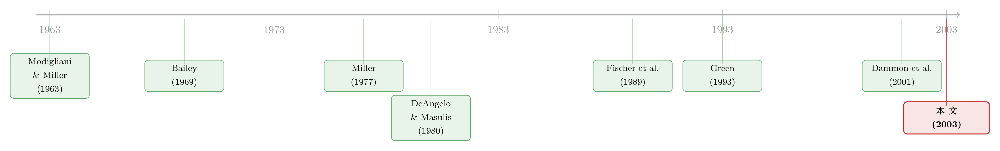

回购，是股东偷偷向政府借的一笔无息贷款
本文读的是 Green & Hollifield (2003, Journal of Financial Economics)：当公司不发股利、而是用回购把现金还给股东时，股东可以一直「拖着不卖」、把资本利得税往后递延。把这份「递延期权」量化进估值，作者发现回购相对股利能把公司的资本成本压低约 0.8%，回购上缴的个税现值只有全额课税的六成上下；正是这股「股权的个税优势」，让最优资本结构在仅仅 3% 的破产成本下就落在了内部解。
1 一个 Modigliani–Miller 一直答不上来的问题
先从一个所有公司金融教科书都绕不开、却又都心虚的结论说起。
Modigliani 和 Miller（1963）告诉我们：因为利息可以在公司层面抵税，每多借一块钱的债，就多一块钱税盾，于是公司的最优选择是——把杠杆加到顶，全部用债融资。这是一个角点解（corner solution）：所有公司、任何时候，都该是 100% 负债。
可现实里没有一家正常公司这么干。这套理论「从来没有被任何人当成一条认真的政策建议」。于是问题来了：M&M 到底高估了什么？
教科书顺着研究者的思路给出三条修正：(1) 财务困境成本（costs of financial distress）；(2) 公司税盾的冗余（税盾本身有风险、有时根本用不上）；(3) 股权在个人税层面的优势（personal-tax advantages of equity）。
前两条已经被研究得很透。这篇论文死死咬住第三条——而且要把它算出一个数来。
2 张力所在：人人都说股权有个税优势，可没人算清它到底值多少
第三条修正的逻辑，Miller（1977）在《Debt and Taxes》里讲得最响亮：利息按普通收入（ordinary income）征税，而股东拿到的回报很大一部分是资本利得（capital gains）。资本利得税不仅税率可能更低，更关键的是——它只在你卖出实现（realization）时才缴。这就给了债务一个个税层面的劣势，足以抵消它在公司层面的税盾。
听上去很美。但接着，一个自然的问题是：这个「股权个税优势」到底有多大？
尴尬的地方就在这里。为了把模型写得能解，前辈们几乎都做了过度的简化：
- Miller（1977）干脆假设股权的分配完全免税。可这显然不对——哪怕公司把现金全部用回购发出去，股东也得卖股、也得实现一部分资本利得才能拿到钱。
- Fischer, Heinkel, Zechner（1989）在他们的动态模型里，沿用 Miller，把股权的个税率直接设成了零。
- DeAngelo & Masulis（1980）假设了一个外生的、随状态变化的股权个税率。
- Graham（2000）则把股权个税率设成了股利支付率的一个临时性（ad hoc）线性函数。
换句话说，这条研究线上最关键的那个量——递延资本利得的期权价值——一直是被外生塞进模型、或者干脆抹成零的。Green 和 Hollifield 的全部野心，就是把这个被偷懒掉的环节内生地、定量地补回来。
想体会「个人税真的会反映进股价」这件事在实证上长什么样，可参见《个人税，悄悄定价了你的股票——一个来自伦敦 AIM 的干净实验》。本文则是从理论一侧，把这股力量的「大小」算出来。
3 这笔账难在哪：会无限膨胀的「状态空间」
在动手算之前，得先明白为什么前人都绕着走。
公司的现金流是随机的。现金流为正时，公司回购股票把钱发出去；现金流为负时，公司只能增发新股来补窟窿。问题在于，新股是按当时的市价发的，而这个价格和老股东手里的持仓成本（basis）几乎不可能相等。于是市场上同时存在着一大堆按不同成本价持有的股票。
而未来要缴多少税，取决于所有这些在外的成本价。也就是说，公司的价值依赖于整个成本价的历史分布。随着时间推移，可能的成本价种类越来越多——状态空间（state space）随时间无界地膨胀。这就是这个估值问题「内在的不可解性」。
所以全文的结构，其实是一场层层设限、把这个膨胀的状态空间摁住的战斗：
- 现金流恒为正时（第 3 节），股票只发行一次，所有人成本价相同，问题可以完整求解，确定性情形下甚至有闭式解；
- 现金流可能为负时（第 4、5 节），就得借助近似——作者跟随 Dammon, Spatt, Zhang（2001），假设回购按所有在外股票的数量加权平均成本价（quantity-weighted average basis）触发纳税。
下面我们重点把第一种、也是最干净的情形讲透——核心的经济学全在这里。
4 核心一步：为什么没人愿意主动卖股
整个模型的地基，是下面这个看似平淡、却异常有力的观察（论文的 Lemma 1）：在没有消费或再平衡动机的世界里，没有任何股东会主动去实现一笔资本利得。
为什么？因为如果你现在卖出、缴掉税、再以更高的价格买回来把成本价垫高，你确实能在未来少缴税；但「未来少缴的税」的现值，永远小于「现在为垫高成本价而必须立刻缴的税」。继续持有、把利得递延下去，相当于从政府那里拿到了一笔无息贷款——这正是「股权个税优势」的微观源头。
于是私下交易只在一个方向发生：当价格跌破成本价时，股东会卖出、实现资本损失（capital loss）。成本价的演化法则因此极其简洁：
$$p_{t+1}^{*} = \min\{p_t,\; p_t^{*}\}$$
价格高于成本价时，成本价不动（只有被回购掉的那部分股票消失）；价格跌破成本价，则全员卖出、成本价重置到当前价。
现金流为正、公司必须回购时，边际卖出者的「无差异条件」决定了她愿意接受的价格 \(p_t\)：
$$p_t(1-\tau) + \tau p_t^{*} = \frac{1}{1+r}\Big(E_t[p_{t+1}](1-\tau) + \tau\, p_{t+1}^{*}\Big)$$
左边是今天卖出的税后所得（卖价扣税、再加回成本价对应的税盾），右边是再多拿一期、下期再卖的贴现价值。这里 \(r\) 是无风险、免税的税后折现率，投资者风险中性。这个欧拉方程（Euler equation）说的是：股东在「今天卖」和「再等一期」之间无差异——而由递归论证，他在「今天卖」和「永远不卖」之间也无差异。
5 模型：把公司算成一篮子「按实现征税的零息债」
现在进入确定性情形，看核心结论是怎么浮出来的。
现金流确定时，价格序列逐期上升，成本价永远停在最初的发行价 \(p_t^{*}=p_o\)。把这个代进欧拉方程，可以解出价格路径（论文 Eq. 7）：
$$p_t = \frac{p_o}{1-\tau}\Big((1+r)^t - \tau\Big)$$
第一步，确定初始价值 \(p_o\)。在 \(t=0\) 这个点，买卖双方对股票的看法是对称的（还没有累积利得），所以初始价就等于流向初始股东的税后现金流的现值。我们来算 \(t\) 期流向初始股东的税后现金流——也就是当期被回购股票的税后所得：
$$ (n_{t-1}-n_t)\big(p_t(1-\tau)+\tau p_o\big) = C_t(1-\tau) + (n_{t-1}-n_t)\,\tau p_o $$
第二步，用「回购总额等于发出现金」这个约束 \((n_{t-1}-n_t)p_t = C_t\)（即 \(n_{t-1}-n_t = C_t/p_t\)）替换：
$$ = C_t(1-\tau) + C_t\,\tau\,\frac{p_o}{p_t} $$
第三步，把价格解 Eq. 7 代入，注意 \(\dfrac{p_o}{p_t} = \dfrac{1-\tau}{(1+r)^t-\tau}\)：
$$ = C_t(1-\tau)\left(1+\frac{\tau}{(1+r)^t-\tau}\right) = C_t(1-\tau)\,\frac{(1+r)^t}{(1+r)^t-\tau} $$
第四步，把每一期的税后现金流再用 \((1+r)^t\) 贴现回来求和，那个 \((1+r)^t\) 恰好被约掉，于是得到 Proposition 1 的核心结果：
把它和「全额课税」下的价值（论文 Eq. 14）摆在一起，整篇论文的灵魂就一目了然了：
$$p_o^{F} = \sum_{s=1}^{N} \frac{C_s(1-\tau)}{(1+r)^s}$$
两个式子分子完全一样，差别只在分母：回购情形的折现因子里多减了一个 \(\tau\)。这个 \(\dfrac{1-\tau}{(1+r)^t-\tau}\) 就是作者所谓的基差调整折现因子（basis-adjusted discount factor）。它和一张「持有到期、到期时价格升值按已实现资本利得课税」的一美元零息债的价格（Eq. 16）一模一样：
$$B_0^{t} = \frac{1-\tau}{(1+r)^t - \tau}$$
于是结论惊人地简洁：在确定性下用回购分配现金的公司，其价值等于一篮子按「实现制」而非「权责发生制（accrual）」征税的纯贴现债券。 递延的力量，就藏在分母那个不起眼的 \(-\tau\) 里。这类表达式此前在 Green（1993）分析应税/免税收益率曲线时已经出现过。
一个反直觉的副产品：随着时间推移，公司的市场价值反而收敛到无税价值，而股东实际拿到的税后现金流却收敛到 \((1-\tau)C_t\) 的全额课税水平。原因在均衡价格里：累积利得越高，股东要求的「不卖就得给我的补偿」越高，极限上他只肯按一个「无税世界里这股票值多少」的价格出手。
6 数字说了什么
把上面的无穷级数截断、代入实际参数（税后折现率取 6%、用 200 期计算），作者算出了几个关键量级：
- 回购 vs 股利的省税幅度：在恒定现金流、税后折现率分别取
3%、6%、9%三档下，用回购替代股利，能为股东省下个税现值的40%–50%。 - 有效税率：递延期权把回购的有效税率压到法定税率的约
60%。 - 资本成本：相对于股利，回购把公司的资本成本降低了约
0.8%。 - 两个比较静态：现金流增长率 \(g\) 越高，资本利得的有效税率反而越高（涨得快、被迫卖得多，递延的好处被吃掉）；而这些效应对现金流的波动率几乎不敏感——这是个值得玩味的发现，意味着「递延期权」并不像普通期权那样靠波动率吃饭。
- 最优资本结构：把模型校准到 Fama & French（1999）的税前现金流经验分布，引入永续债、股东自愿违约和财务困境的死重成本后，只需
3%（占公司无税价值）的破产成本，最优资本结构就落在内部解了。
这里还藏着一个静态模型看不到的机制：哪怕破产没有任何死重成本，破产本身也会毁灭价值——因为它缩短了股权索取权的期限，从而缩短了「递延期权」的到期时间、压低了它的价值。这是把递延当成一份期权之后，才看得见的微妙之处。
7 文献脉络
把这条线索拎出来，它的演进其实是一部「如何对待个人税」的思想史。
最初是 Modigliani & Miller（1963）立下的债务税盾与全债角点解。接着，Miller（1977）用个人税把这个角点解打破——但代价是把股权分配假设成了免税。再往后，研究者们各自给「股权个税」塞进了不同的外生设定：DeAngelo & Masulis（1980）用状态依赖的外生税率，Fischer, Heinkel, Zechner（1989）在动态模型里干脆设为零。
与此同时，另一条更偏公共经济学的支流在追问「递延到底值多少」：Bailey（1969）估计递延期权把资本利得的有效税率砍掉约一半，再加上身故时的成本价提升（step-up），又砍掉一半，最终有效税率只剩法定的四分之一；Balcer & Judd（1987）则批评了「存在一个恒定隐含税率」的近似。而 Green（1993）提供了「基差调整折现」的工具，Dammon, Spatt, Zhang（2001）给出了数量加权平均成本价这把可操作的钥匙，Graham（1996, 2000）则用模拟把债务税盾的量级钉了下来。
Green & Hollifield（2003）正坐落在这两条支流的交汇处：它不再外生设定股权个税，而是让「递延的期权价值」从公司被迫分配现金这一唯一的实现动机里内生地长出来，并用 Fama & French 的真实现金流分布把它校准成一个可比的数字。

8 评论与延伸（Q&A + 研究方向）
(a) 几个可能的疑问
Q：这和 Miller（1977）的「债务与税」到底差在哪？
差就差在那个 \(-\tau\)。Miller 假设股权分配免税，相当于把基差调整折现因子里的 \(\tau\) 抹成零；本文则保留它，让递延期权的价值随现金流时序、增长率内生地决定。作者明确指出，正是这个基差调整折现因子，造就了本文与 Miller 推出的杠杆收益之间的差别。
Q：模型里有效税率是 60% 法定税率，可 Bailey（1969）说递延能砍到四分之一，是不是矛盾？
不矛盾，因为动机不同。Bailey 等公共经济学文献允许投资者出于消费、再平衡等动机主动择时实现，递延的余地大得多；本文里实现的唯一动机是公司被迫吐出现金，股东其实是「不情愿地」被卷进交易，所以省税幅度更小（六成 vs 四分之一）。本文估的是「公司分配需求」单独施加在隐含税率上的那部分效应。
Q：为什么说在这个模型里股利是「被支配（dominated）」的？现实里公司明明在发股利。
在纯税收的框架里，股利按普通收入即时全额课税，回购则能享受递延，所以股利严格劣于回购。本文坦承这恰恰说明现实中发股利一定有税收之外的理由——代理问题、信息不对称。本文的贡献不是解释为什么发股利，而是量出发股利相比回购到底多缴了多少税。
Q：「数量加权平均成本价」这个近似，会不会系统性地高估或低估个税优势？
会低估。用平均成本价实现损失是次优的——理性投资者本该先卖掉成本价最高的那批股票来最小化纳税。所以这个近似低估了股权的个税优势。作者为此又补了一个把公司总价值当外生、用模拟评估个税负债现值的方法来交叉验证，结果与确定性、正现金流情形下的省税量级相近。
Q：结论说效应对波动率不敏感，这难道不奇怪吗？递延不就是个期权吗？
这正是反直觉之处。普通期权的价值随标的波动率上升，但这里的「递延期权」更像一份按实现制征税的零息债组合，其价值主要由现金流的时序与增长率驱动，而非分散在各期的波动。增长率越高，被迫卖出越多、递延空间越小，有效税率反而上升——这是比波动率重要得多的边际。
Q：3% 破产成本就能撑起内部解，可信吗？
关键在于本文把天平的「股权」一侧加重了：个税优势让股权不再像 M&M 里那样被债务税盾完全压制，于是不需要很大的困境成本就能把最优杠杆从角点拉回内部。再叠加「破产缩短递延期权期限」这条额外的价值毁灭渠道，
3%这个数就不算离谱。当然，它依赖于校准所用的 Fama & French（1999）现金流分布。
(b) 几个可能的研究问题与提案
1. 把「递延期权」搬进公司债定价。 【经济故事】本文把股权算成一篮子按实现制征税的零息债。一个自然的镜像问题是：当公司同时有应税债与个税待遇不同的股权在外，信用利差里有多少是「税收 clientele」造成的、而非违约风险？这能把个税楔子接进结构化信用模型。 【可行性】中。需要 TRACE 公司债成交数据 + 持有人税收身份的代理变量（如保险公司 vs 共同基金 vs 散户持仓）。识别难在分离税收效应与流动性/违约，可借鉴本文的基差调整折现思想做结构估计。
2. 外资持有人如何改变股权的个税优势。 【经济故事】本文的优势完全建立在「本国股东缴资本利得税」之上。若边际投资者是面对不同（甚至零）资本利得税的外国持有人，递延期权的价值会被重写，公司的最优回购/股利与杠杆也随之改变。 【可行性】中高。可用各国资本利得税改革 + 外资持股可投资度（investability）做双重差分；外资份额数据可得（关于外资持有人这条线，可参见《外资真是「蝗虫」吗？》）。
3. 回购 vs 股利的资本成本差，能否在横截面被直接测出来？
【经济故事】模型预言回购把资本成本压低约 0.8%。这是个可被数据检验的硬预测：长期高回购比例的公司，其隐含资本成本是否系统性更低？
【可行性】高。Compustat 回购/股利数据 + 隐含资本成本估计（如分析师预期反推）。难点是回购倾向的内生性，需要工具变量或税改冲击。
4. 税改作为自然实验：当资本利得税率跳变。 【经济故事】本文有效税率随法定税率线性缩放（约六成）。历次资本利得税率调整（如 1997、2003 美国税改）提供了干净的外生冲击，可检验回购强度与股价是否如模型预测般反应。 【可行性】高。事件研究 + DiD，数据成熟（关于派息税如何改变企业行为，可参见《派息税没有改变投资的『总量』，却悄悄改写了它的『去向』》）。
5. 流动性约束下的递延期权。 【经济故事】本文假设股东可以无成本地「不卖」。若股东出于流动性需要被迫提前实现，递延期权会折价，个税优势缩水。把流动性冲击写进 Dammon-Spatt-Zhang 框架，能得到一个「流动性—税收」交互的资本成本。 【可行性】中。理论上 doable；实证需要持有人层面的交易/流动性数据，较难，可先做校准与数值实验。
9 我的判断
贡献。这篇论文最漂亮的地方，是把一个被前人反复外生塞进模型的量——递延资本利得的期权价值——内生地、可量化地算了出来，并归结为一个极其干净的对象：基差调整折现因子，以及「公司即一篮子按实现制征税的零息债」这个比喻。它第一次让「股权的个税优势到底有多大」有了一个可信的数量级（资本成本约降 0.8%、有效税率约六成法定税率），也让「为什么最优资本结构是内部解」有了一个不依赖巨大困境成本的解释。把破产理解为「缩短递延期权期限」，更是静态模型完全看不见的洞见。
对识别（在这里是对建模假设）的担忧。所有结论都建立在「股东除了被迫吐现金之外没有任何交易动机」这一极强假设上——它一举抹掉了消费、再平衡、税收 clientele、不对称信息和道德风险，而这些任何一个都可能是一阶重要的。数量加权平均成本价的近似系统性低估了优势，虽然作者用模拟做了稳健性交叉验证，但「最优先卖高成本价股票」的真实策略与之差多少，仍是开口的。再者，模型里股利被严格支配，却与现实中股利的顽强存在直接冲突——这提醒我们，本文量出的是「税收这一维」的力量，而非完整的支付政策。
后续想看到的。我最想看到的是把这套递延期权的逻辑接到信用市场和外资持有人两个方向：前者能告诉我们信用利差里有多少是个税楔子，后者能告诉我们当边际投资者的税收身份改变时，这股「股权个税优势」会不会整体蒸发——而这恰恰是当下全球资本流动下最现实的问题（顺带一提，关于「税盾的价值不等于税盾的现值」这一相邻命题，可参见《税盾的价值，并不等于税盾的现值》）。
参考文献
- Bailey, M. J. (1969). Capital gains and income taxation. In Harberger, A., Bailey, M. (Eds.), Taxation of Income from Capital. Brookings Institution, Washington.
- Balcer, Y., Judd, K. L. (1987). Effects of capital gains taxation on lifecycle investment and portfolio management. Journal of Finance 42, 743–757.
- Dammon, R., Spatt, C., Zhang, H. (2001). Optimal consumption and investment with capital gains taxes. Review of Financial Studies 14, 583–616.
- DeAngelo, H., Masulis, R. (1980). Optimal capital structure under corporate and personal taxation. Journal of Financial Economics 8, 3–29.
- Fama, E., French, K. (1999). The corporate cost of capital and the return on corporate investment. Journal of Finance 54, 1939–1968.
- Fama, E., French, K. (2001). Disappearing dividends: changing firm characteristics or lower propensity to pay? Journal of Financial Economics 60, 3–43.
- Fischer, E., Heinkel, R., Zechner, J. (1989). Dynamic capital structure choice: theory and tests. Journal of Finance 44, 19–40.
- Graham, J. (1996). Debt and the marginal tax rate. Journal of Financial Economics 41, 41–73.
- Graham, J. (2000). How big are the tax benefits of debt? Journal of Finance 55, 1901–1941.
- Green, R. (1993). A simple model of the taxable and tax-exempt yield curves. Review of Financial Studies 6, 233–264.
- Green, R. C., Hollifield, B. (2003). The personal-tax advantages of equity. Journal of Financial Economics 67(2), 175–216.
- Jagannathan, M., Stephens, C., Weisbach, M. (2000). Financial flexibility and the choice between dividends and stock repurchases. Journal of Financial Economics 57, 355–384.
- Miller, M. (1977). Debt and taxes. Journal of Finance 32, 261–275.
- Modigliani, F., Miller, M. (1963). Corporate income taxes and the cost of capital: a correction. American Economic Review 53, 430–443.